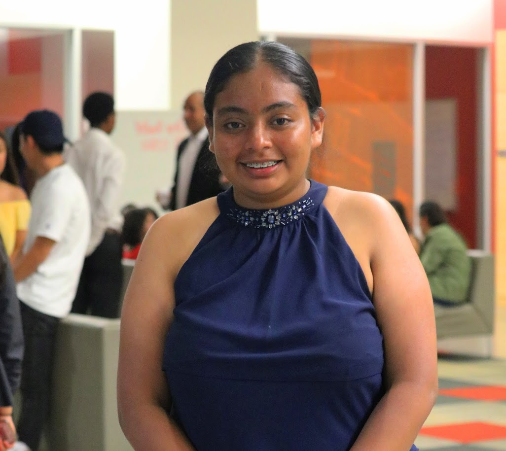
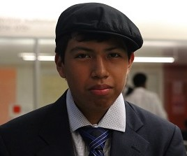

About us

Abigail Castaneda
Hi, my name is Abi. I am a 15-year-old from San Jose, Ca. I attend DCP El Primero as a rising sophomore. I found out about SMASH from my math teacher. I applied because I knew this was going to be a huge opportunity. Another reason I chose this program was to explore other subjects to be sure of what I really want to become. My experience in SMASH so far has been very exciting because I got to learn about new subjects and I have discovered new interests. At the moment I aspire to be an architect because it is a combination of STEM and art. Finally, my biggest inspiration in life is my family because they support me and I will eventually be the one to take care of them.
.png)
Taliyah Cato
My name is TaLiyah Cato, I am a rising sophmore at Sacred Heart Cathedral Prep. I was born and raised in San Francisco, California. In my previous year in high school, I was interested in physics but my overall favorite subjects are science and math. I found out about SMASH through my middle school robotics teacher. I am interested in Design Architecture and Engineering because I have attended many programs and I have connected with architecture and engineering the most. My mother is my inspiration because she motivates me to work hard and in the end, I will be the one providing for her.

Nam Le
My name is Nam and I attend Gunderson High in San Jose, Ca. I am 15 years old and a rising sophomore. I am interested in the medical field, I am currently thinking of neuroscience. I learned about SMASH when the site director, Alicia Parise, came to my school and did a presentation about the program. I decided to apply because I thought it would be fun and beneficial for my future. So far SMASH has been a great experience because it has allowed me to learn more about myself, what I want to do in the future, and it allows me to socialize more. Above all, SMASH has been an amazing and wonderful time; like, I cannot stress just how much fun I have had throughout this program.
Andrew Chajon
My name is Andrew Chajon and I attend Gunderson High in San Jose, Ca. I am 15 years old and a rising sophomore. I am intersted in CS, as am always surrounded by tech growing up. I learned about SMASH through my high school engilsh teacher. Also when the site director, Alicia Parise, came to my school, to talk about the program. When I apply to SMASH I thought it would be a great way to network to people who have the same intrested. So far SMASH allows me to express myself freely and self exlpore without no judgment. Looking back, the things keeps me motivated knowing that my parents gave up so much in order to give me a good education in life.